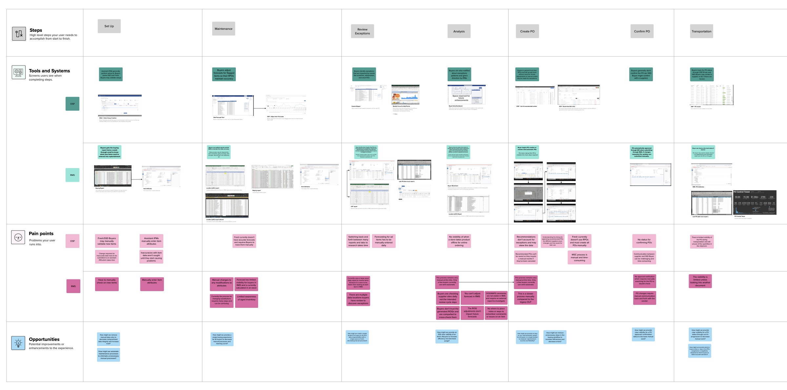

Kroger · Design leadership
Keeping a team pointed at users when the plan fell apart
In 2023 the buyer platform my team had spent a year and a half researching wasn’t funded. Instead of giving up, I kept my two designers with Kroger’s buyers through the rollout of the ERP ordering tool. What they learned in those months became the business case that got our platform funded the next year.
- Role
- Senior Manager, Product Design. Directed two product designers and partnered with product, technology and training leaders.
- Timeline
- 2023, leading into 2024 funding
- Users
- About 200 replenishment buyers moving from legacy tools to Oracle RMS
- Methods
- Ongoing feedback program, contextual inquiry, onsite launch support, journey mapping, workshop facilitation
The plan that didn’t happen
Kroger’s roughly 200 replenishment buyers write the purchase orders that keep warehouses stocked. The company was several years into replacing their legacy tools with Oracle’s Retail Merchandising System, RMS.
My team had spent about 18 months researching how buyers worked. We knew their pain points well, and we knew RMS wouldn’t solve many of them. Going into 2023, the plan was to build a buyer experience alongside RMS to fill those gaps. The funding kept getting pushed, and it didn’t come through.
That left a decision about two designers whose product had just disappeared. They could be reassigned, or they could wait for funding that might not come. I chose a third option.
The product wasn’t funded, but the users still needed us.
Reframing the work around adoption
The buyers were about to go through a major change in how they did their jobs. Nobody was responsible for understanding that experience from their side. So I gave my designers a new mission: help buyers adopt RMS, and learn everything we could along the way.
How the team worked through 2023
- ListenA feedback program starting in March, covering buyers in training and the pilot group using RMS.
- ShareFindings to technology and business leadership about twice a quarter.
- Improve trainingWorked with the trainers to change the learning environment based on what buyers struggled with.
- Support the launchSat with buyers onsite when RMS went live in the fall.
- Learn from workaroundsStudied the reports and spreadsheets buyers built to cope, and turned them into a strategy.
For about nine months, my two designers worked with buyers almost every day: learning what made adoption hard, what buying would look like in the new tool, and where training fell short. My job was to make sure that work reached the people who could act on it, and to keep the team focused while priorities around us kept shifting.
Getting leaders aligned before launch
As launch approached, business and technology leaders still had open questions about what buyers needed on day one. I co-facilitated a workshop with both groups. Using human-centered design facilitation methods from my LUMA training, we built a format that turned the open issues into a shared, actionable plan for launch.
Based on our research, we didn’t expect a smooth launch. We prepared for it instead of hoping, with a plan to keep collecting feedback through go-live and the rollouts after it.
Showing up for a hard launch
The first buyers moved to RMS in the fall of 2023. It was as difficult as expected. My designers were there with them, helping them work through new ways of buying and capturing what broke.
One signal stood out. To keep buying, teams created dozens of supporting reports and spreadsheets, quick fixes for what RMS didn’t show them. My team treated those workarounds as research. Each one pointed to a gap in the new system, and together they made a strategy: get buyers off Excel and Power BI, either by using RMS better or by building the right tool.


From evidence to funding
By the end of 2023, the conversation had changed. The gaps we had described in research were now visible in real workarounds, real support requests and real buyer frustration. The buyer experience resurfaced as a need for 2024.
It was funded the following year, rebuilt on the Beacon platform as Buyer Modernization, and launched to the first buyers in early 2025. The research from this year shaped its first features, starting with alerts that replaced the spreadsheets buyers had built to cope. Read the Beacon case study →
Leading the team through it
All of this happened in a year with a lot of change around the team: shifting priorities, a merger announcement, and a return to the office. Keeping the team steady mattered as much as the work itself. What I focused on:
- Tell the team early. I acted as the link between the team and leadership, and passed along changes as soon as I could, so nothing came as a surprise.
- Make it safe to talk about hard things. Uncertainty is stressful. I made room in 1:1s and team meetings to talk about it openly.
- Advocate upward. I spent much of the year making the case for buyers with technology leaders, and helping my designers turn their findings into insights leadership could use.
What others said
- “Proactive about being the liaison between the team and leadership and giving the team a heads up as soon as possible about updates or new communication around expectations.” — Direct report
- “Chris has taken a volatile space with shifting decisions and priorities from the business and moved his team to priorities making impacts.” — My manager
- “He stays consistently true to customer-first and guides his team (direct reports and peers) to understanding needs and change impact in RMS and AIP.” — My manager
What I learned
- Unfunded doesn’t mean unimportant. The users’ problems didn’t go away when the budget did. Staying with them kept the work alive.
- Evidence beats advocacy. A year of arguing for the buyer platform did less than a few months of showing leaders what buyers were actually going through.
- Workarounds are research. Every spreadsheet someone builds to cope is a requirement nobody wrote down.
- Steady the team first. When everything around a team is changing, clear and early communication matters more than having all the answers.